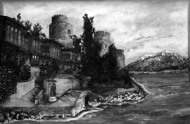

Bir İki Yalı Daha
Cevdet Paşa’nın yalısından sonra bir yalıcık daha vardı. Yüzü dardı, bahçesi de arkadaki iki setten ibaretti. Bu sahilhaneyi ilk defa olarak içinde “Mahşer Midillisi” lakabıyla meşhur Kamil Bey’in kerimesi Sare Hanım otururken tanıdığımı hatırlıyorum. Zira hemen bizim kapı komşumuzdu. Bu biçare kadın mühlik[189] bir hastalıkla öldü. Aziz dostu ve doktoru Zambako Paşa’nın bu hastasıyla nasıl çırpındığına koca İstanbul şahit ve aferinhandı.[190] Bu yalıda Sare Hanım’dan sonra Bitlis Valisi Ethem Paşa’nın hanımı Nafia Hanımefendi otururdu. Bu hanımın hemşiresi şişman Reşat Fuad Bey’in validesi Nimet Hanımefendi’dir. Ethem Paşa’nın bir biraderi vardı ve mutasarrıflıklarda bulunurdu. Her iki kardeşin gayet müstehzi olmak gibi bir şöhretleri vardı. Ethem Paşa çok yaşadı ve seneler sonra babam şehremini olarak Bursa’dan İstanbul’a geldiği zaman hâlâ hayatta ve bermutat bizleri aramakta idi. Bu yalı daha sonra Mabeyinci Faik Bey’e intikal etti; güzel tamir edildi. Dış duvarlar çakıl taşlarıyla örüldü ve Kuyumcubaşı Jak Harunaçi Bey’e satıldı. Faik Bey de Cevdet Paşa Yalısı’na geçti ve Ayşe Sultan için kendisinden satın alınıncaya kadar içerisinde kalabalık bir aile oturdu. Faik Bey’in kerimeleri Fahire ve Faize Hanımlar Türk musikisi sanatkârlarımızın mefahirlerindendir.
Bunlardan biri de Mümtaz Efendi’nin hemen yanındaki Dürrizadelerden Abid Molla’nın yalıları idi. 1921’de yanıncaya kadar ele geçmediler. Jak Bey’in yalısında Mütareke’nin acayiplikleriyle işgal edenlerin verdiği bir balodan çıkan yangın bu üç yalıdan ikisini kâmilen, birini kısmen yakmıştı. Mümtaz Efendi Yalısı’nın hususiyeti fevkalhad[191] genişliği idi. Çok büyük pencereli ve odaları uzun sofaları vardı. İçinde ve ikinci katta bir hamamı bulunuyordu. İhyaen[192] tamir edildiği zaman kadar ve ta Robert Koleji’nin binalarına kadar çıkan bir bahçesi vardı. Oradan da güya şoseye bir kapısı vardı. Abid Molla’nın bahçesi büyük değildi; fakat sahilhanesi çok sevimli idi. Daire çok muntazamdı. Belki diğerleri gibi kalabalık olmadığı için de çok tertipli idi. Dürrizadeler çok eski bir ailedir. Abid Efendi mevkiini muhafaza eder, herkesten hizmet görürdü.
Bundan sonra Hicaz valisi Hakkı Paşa’nın yalısı geliyordu. Hatırımda kaldığına nazaran boyasız pencereleri geniş, bahçeleri ufak bir sahilhane idi. Hususiyetinden pek haberdar değilim. Yalnız kerimelerinden birinin rahmetli Celal Sahir [Erozan]’in validesi olduğunu zannediyorum. Hakkı Paşa’nın iyi valilerden olduğunu söylerlerdi. “Hakkı Paşa bu vilayet valisi kim...” mısraıyla yaptırdığı bir kıta ile Çekirge Millet Bahçesi’nde yaptırdığı bir köşkten dolayı padişaha dua ediyordu ve bu kıtayı güzel bir yazıyla köşkün duvarlarına yazdırmıştı.
Mustafa Şekip Paşa Yalısı
[Bu konak] biz henüz çocukken oğlu Arifî Paşa’nın ismiyle anılırdı. Çünkü Şekip Paşa ölmüştü ve sadr-ı esbak Arifî Paşa yazları burada, kışları Nuruosmaniye’deki konağında ikamet ederlerdi ve bu konakta öldü. Yukarıda bahsi geçen Arifî Paşa Yalısı’nın hususiyeti tıpkı Mümtaz Efendi Yalısı gibi harem daireleri haricinin direkli oluşu, odalarıyla sofalarının çok ferah bulunuşuydu. O zaman “Bu sofalarda at oynatılırdı” derledi. Bu yalı çok kalabalıktı. Paşanın kardeşi Memduh Bey, büyük oğlu Mehmed Bey, oğulları Mustafa Şekip, İsmail ve Şefik Beyler, hemşiresi Makbule Hanım’la zevci Kamil Bey ve bazılarının çoluk çocuğu hep birlikte ikamet ederlerdi ve dairenin bütün işlerine baş ağası ve kâhyası Yuvan Efendi bakardı. Çok emektardı ve namuslu bir adamdı. Makbule Hanımefendi çok muhterem bir hanımefendiydi. Okumuş yazmışlardandı. Fevkalade zekiydi. Daima harem dairesinin harem kapısı üzerine tesadüf eden cumbanın içinde oturur, geleni gideni; vapur iskelesi de o tarihte o civarda bulunduğu için vapurlara giren çıkanı seyreder, eğlenirdi. Ufacık cumbada oturmak keyfiyetini de kolaylıkla temin ederdi. Zira küçücük mini mini bir hanımefendiydi. Bize lütfen sıkça geldiği için büyükannem ona mahsus minnacık bir koltuk yaptırmıştı. Arifî Paşa fevkalade meraklı bir zat olarak içeceği sütlü kahveyi bile dirhemle tarttığı halde oğlu Mehmed Bey okka ile rakı içerdi ve genç öldü. Ne kadar da güzel saçlı, sakallı bir zattı zavallı. Fakat rakı zevalini mucip olmuştu. Arifî Paşa nahif, hastalıklı binaenaleyh sıhhatine dikkatli ve korkak bir zat olduğu halde işlerde fevkalade cesur ve biperva olmakla meşhurdu.
Kemerli ve Yılanlı Yalılar
Arifî Paşa’dan sonra Emniyet Sandığı Müdürü Ömer Bey’in yalısı gelirdi. Bu yalı kemerliydi; yani rıhtımın ta üzerinde, denizin ta yanında olduğu için arkasında geçen yolun ötesinde kalan odalara ve setli bahçeliğe bir köprüsü vardı. Sokak da bu köprünün altından geçerdi. Ömer Bey Bitlis Valisi olarak İstanbul’dan çıktıktan sonra, daha doğrusu Ömer Bey’in vefatından sonra bu yalı Haşim Paşa’ya geçmişti. Yeniden yapılmış, aşı boyasıyla boyanmıştı. Son zamanlarda istimlâk edilinceye kadar veresede idi zannediyorum.

Yılanlı Yalı
Haşim Paşa’nın merakı muttasıl yapı yaptırmak ve hepsini aşı boyasıyla boyatmaktı. Bu sahilhanenin letafeti denizin üstünde kurulmuş olmasındaydı. Kemer geçilir geçilmez bir de tekke vardı yılanlı yalıyla bu yalı arasında. Bu tekkeden kandil geceleri namazlar kılınırdı; dualar edilirdi; zikirler yapılırdı. Fakat ne tekkesiydi şimdi hatırlayamıyorum. Yalnız şeyh efendinin kızı Hasibe Hanım’ı unutamıyorum. Çünkü bize sık gelirdi ve vefalı bir ihlâs gösterirdi. Bunlardan bugün yalnız yılanlı yalı yerinde duruyor, diğerlerinin yerinde yeller esiyor.
Akşam, 11 Eylül 1947